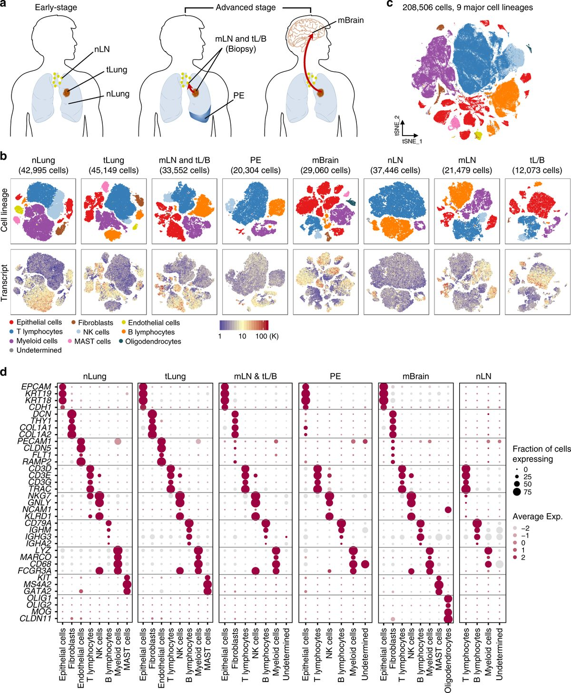
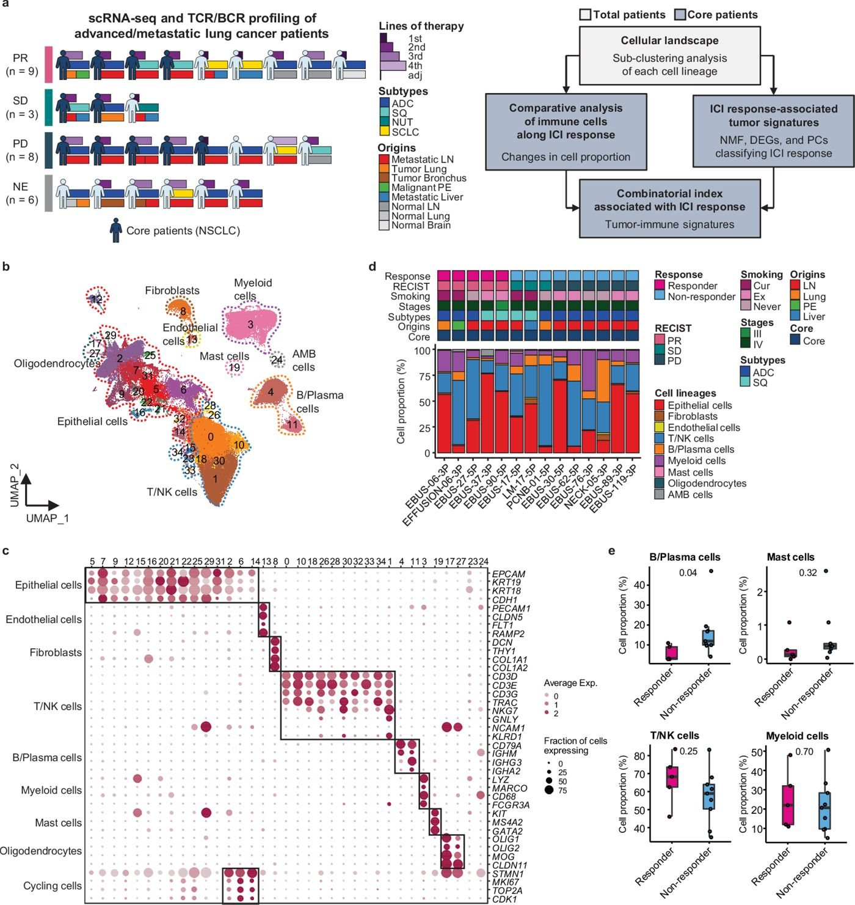
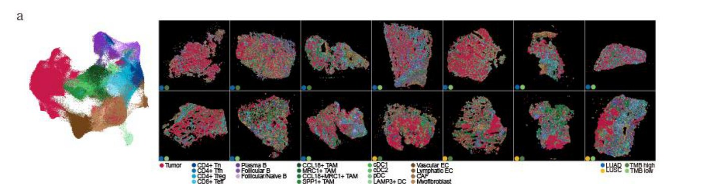

Cellular ecosystems of lung and other cancers resolved at single-cell resolution — how tumor, immune, and stromal cells are reprogrammed as disease progresses.

Tumor and immune signatures that shape response to immune checkpoint therapy — and markers that predict benefit before treatment.

Genomics, single-cell RNA sequencing, and spatial profiling combined to reveal how tumor genotype shapes the immune niches of lung cancer.